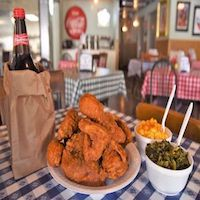
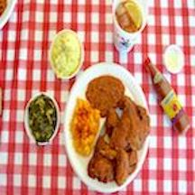

Gus's World Famous Fried Chicken is a popular fried chicken restaurant based in downtown Memphis, Tennessee. It was founded in the tiny town of Mason, Tennessee, and many other places. It has been featured on "Food Channel Television" shows including The Best Thing I Ever Ate, $40 a Day with Rachael Ray and Man v. Food.
Over 60 years ago in the small community of Mason, Tennessee, Napoleon “Na” Vanderbilt created something amazing – fried chicken that could unite a community. In an era of divisive racial attitudes the residents of Mason found that they could all – black and white – agree on how much they loved Na’s fried chicken.
However, no matter how many Gus’s locations open or how far across the globe they expand, Wendy and the entire Gus’s family remain dedicated to the recipes and traditions originated by the Bonners. Note the slightly sweet beans and slaw served with every meal. Gus and Gertrude perfected these recipes, allowing their slight sweetness to offset the spiciness of the fried chicken.


Contact us at: 901-373-9111